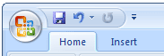
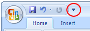
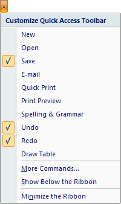
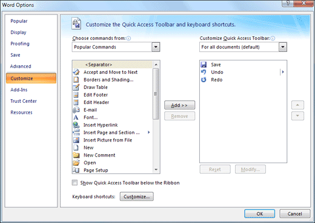
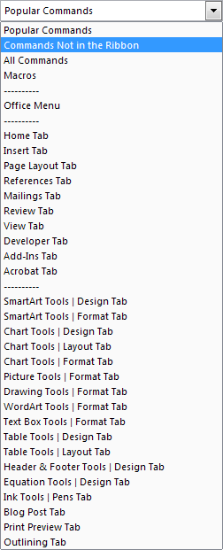
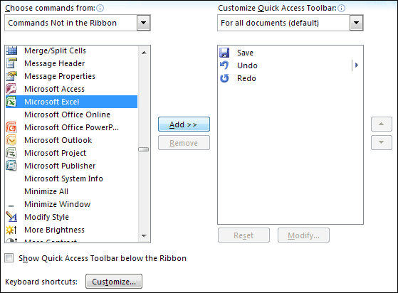
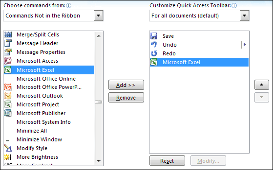
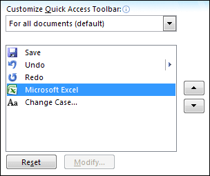
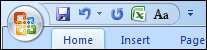

Free
computer Tutorials
|
Free
computer Tutorials
|
|
 home home |
|
|||||
Microsoft Word 2007 to 2010Add or Remove items from the Quick Access ToolbarYou can customize the Quick Access toolbar in Microsoft Word. The Quick Access toolbar is the one just to the right of the round Office button (or just above the File tab in Word 2010). This one:  The three items currently on the Quick Access toolbar above are the Save icon, Undo, and Redo. If you look closely at the image above, you'll see an arrow pointing down:  Click the arrow to reveal a menu. This one:  The items with check marks next to them are the ones currently in the Quick Access toolbar. Clicking the More Commands option brings up the Customize tab on the Word Option dialogue box (the Quick Access Toolbar tab will be displayed in Word 2010). This one:  The idea is that you select an item from the left-hand list, then click the Add button. When you click OK, the item gets added to the Quick Access toolbar. To remove an item, select it from the right-hand list, then click the Remove button.
But click on Popular Commands at the top. You'll then see a list of items appear:  Select Commands Not in the Ribbon and the list box underneath will change. In the image below, we've chosen Microsoft Excel as something we want on the Quick Access toolbar. That way, we have a fast way to open Excel:  The next image shows that our chosen item has been added to the list on the right:  In the next image, we've chosen the Excel item from the list box on the right:  The two arrows allow you to move your selection up and down. So, if we wanted to have the Excel item as the first one, we left-click to select it. Then click on the UP arrow to move it to the top of the list. Notice, too, that we've also added the Change Case item to appear on the Quick Access toolbar. Have a look at the list of items and add your own choices. Click OK when you're done. Your Quick Access toolbar will then look something like this:  The Quick Access toolbar comes in very useful and saves you hunting around all the different tabs for the item you want.
In the next lesson, you'll learn how to set up some keyboard shorcuts in Word 2007 or Word 2010. Keyboard Shorctus in Word 2007/2010 --> <--Back to the Word Contents Page View all our Home Study Computer Courses
|
||||||
|